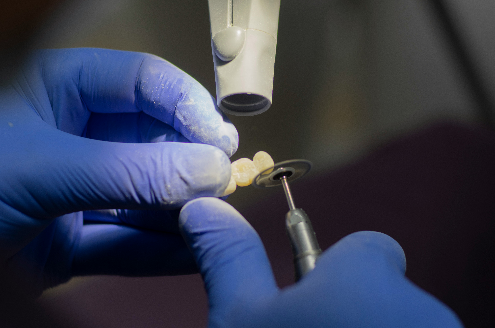
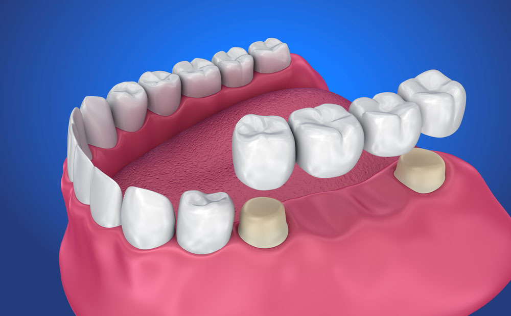
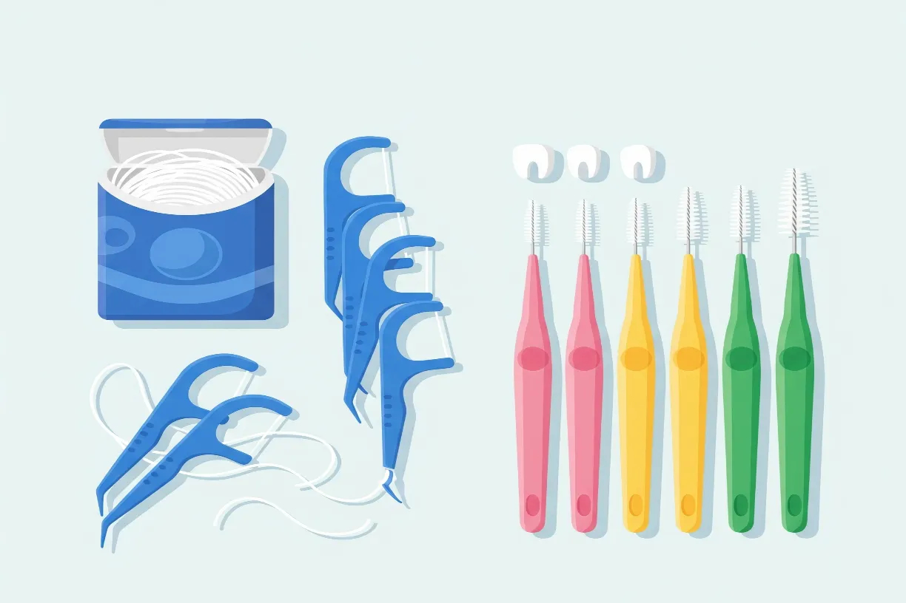

★★★★★
"My cracked molar was saved with a crown that looks just like my real tooth. I can chew on it without any worry now. Excellent work."
Restorative Dentistry
Restore damaged teeth and replace missing ones with strong, natural-looking crowns and bridges — bringing back your bite, your smile, and your confidence.


Crowns and bridges are fixed dental restorations that repair damaged teeth and replace missing ones — permanently cemented in place to look, feel, and function like natural teeth.
A crown is a custom-made cap that fits over a damaged, weakened, or heavily filled tooth. It restores the tooth's shape, strength, and appearance, protecting it from further damage.
A bridge replaces one or more missing teeth by anchoring artificial teeth to the natural teeth or crowns on either side of the gap — literally "bridging" the space for a complete, even smile.
A damaged or missing tooth affects far more than appearance. Restoring it protects your whole mouth in several ways:
Crowns and bridges solve different problems. Here's a simple comparison to help you understand which does what:
| Feature | Dental Crown | Dental Bridge |
|---|---|---|
| Main purpose | Restores a single damaged tooth | Replaces one or more missing teeth |
| How it works | Caps over an existing tooth | Anchors to teeth on either side of a gap |
| Best for | Cracked, weak, or heavily filled teeth | Gaps where natural teeth remain nearby |
| Appearance | Natural-looking, colour-matched | Seamless, fills the gap naturally |
| Longevity | 10–15+ years with good care | 10–15+ years with good care |
Sometimes a crown, a bridge, or a combination is the right solution. During your consultation, Dr Deepesh Agrawal will recommend the best option for your teeth.
Getting a crown or bridge usually takes two visits, a couple of weeks apart, while your custom restoration is made. Watch the short walkthrough below, then read what to expect at each stage.
A step-by-step look at how crowns and bridges are fitted.
Dr Agrawal examines the affected tooth or gap and takes X-rays to plan your restoration. Together you'll decide whether a crown, bridge, or combination is best.
Your treatment plan, timeline, and cost are explained clearly before anything begins.
The area is numbed with local anaesthesia for comfort. The tooth (or the teeth on either side of a gap) is gently shaped to make room for the crown or bridge.
This step ensures your restoration fits securely and looks natural.
A digital scan or impression of your teeth is taken so your custom crown or bridge can be crafted to fit precisely and match your natural shade.
A temporary restoration is fitted to protect the tooth while your permanent one is made.
At your next visit, the temporary is removed and your custom crown or bridge is checked for fit, colour, and bite before being permanently cemented in place.
Dr Agrawal makes any fine adjustments so it feels completely comfortable.
Your new crown or bridge looks and functions just like natural teeth. You can eat, speak, and smile with confidence right away.
With simple care, your restoration will serve you well for many years — and your treatment is complete.

Good care keeps your restorations looking great and lasting as long as possible:
₹4,000 – ₹20,000+ per unit
The cost depends on the material used (metal, porcelain-fused-to-metal, or all-ceramic/zirconia), the number of teeth involved, and the complexity of your case. Because every mouth is different, we provide an itemised, no-obligation quote after your consultation.
A well-made crown or bridge is a long-term investment in your smile and oral health. Ask us about material choices and flexible payment options during your visit.
Prices are indicative and confirmed only after an in-person examination.
"My cracked molar was saved with a crown that looks just like my real tooth. I can chew on it without any worry now. Excellent work."
"Got a bridge for two missing teeth. The result is seamless — no one can tell. Dr Deepesh was thorough and the pricing was transparent."
"After a root canal I needed a crown, and it fits perfectly. The whole process was comfortable and quick over two visits."
With good oral hygiene and regular checkups, they typically last 10 to 15 years or more. Avoiding very hard foods and keeping the area clean helps them last even longer.
No. The procedure is carried out under local anaesthesia, so it's comfortable. You may feel mild sensitivity for a few days afterwards, which soon settles.
Usually two visits — one to prepare the tooth and take impressions, and another to fit the final restoration. You'll wear a temporary in between.
They can be made from metal, porcelain-fused-to-metal, or all-ceramic/zirconia. All-ceramic options offer the most natural appearance. We'll help you choose what's best for your needs and budget.
Special floss threaders or interdental brushes make it easy to clean beneath a bridge. We'll show you the right technique to keep it healthy.
Both replace missing teeth well. A bridge uses neighbouring teeth for support, while an implant stands alone. Dr Agrawal will explain the pros of each so you can decide.
Book a consultation with Dr Deepesh Agrawal to repair damaged teeth or replace missing ones — with a clear, personalised treatment plan and quote.
Malviya Dental Assistant
Powered by AI